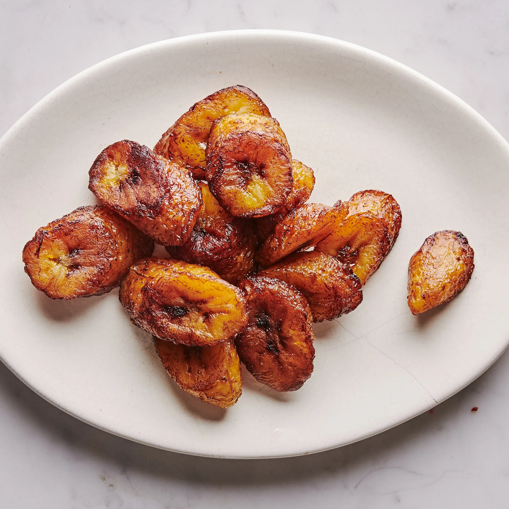

Maduros

Description
The best plantains for this maduros recipe are the ones that have very black skins and tender flesh.
The darker they are, the sweeter and less starchy they become, and that is exactly what you want to get that deep caramelization and custardy interior.
These make a perfect side dish.
Ingredients
- Ripe Plantain
- Vegetable Oil
Steps
- Trim ends of plantains, peel, and cut diagonally into 1" pieces.
- Heat oil in a large skillet over medium-high. Carefully place 1 plantain piece in oil. If it bubbles vigorously, the oil is ready. If it doesn’t, wait another minute, and try again. Working in batches, cook plantains, turning once, until beginning to brown, 1–2 minutes per side.
- Reduce heat to low and continue to cook, turning occasionally, until soft and deep golden brown, 6–8 minutes. Transfer to a paper towel-lined sheet tray. Season with salt and/or sugar, if desired. Serve hot.